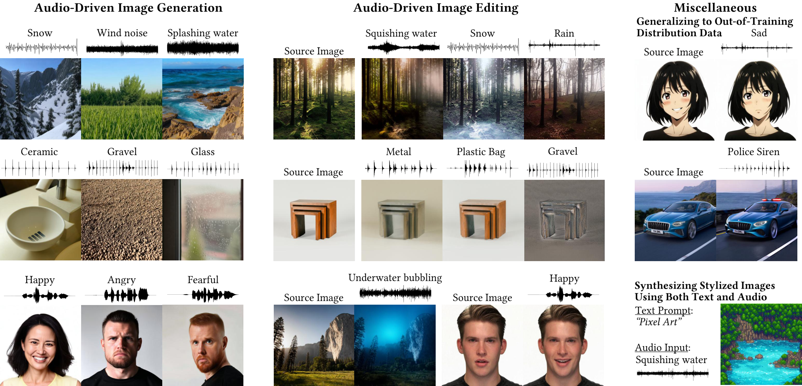

Audio → Image
Music-to-Image
Convert a music excerpt into visual conditioning and generate an image that matches its mood or content.

What you’ll build
Train an audio-conditioning adapter that connects a frozen audio encoder to a frozen diffusion model.
Model and adaptation
CLAP audio encoder → trainable MLP → eight conditioning tokens for Stable Diffusion 1.5.
SonicDiffusion motivates audio-conditioned diffusion; MUImage supplies paired media. The course uses a smaller MLP adapter architecture. Ordinary CLIP cannot directly score audio, so semantic alignment also needs a listener evaluation.
Data
Training
MUImage music–image pairs, using the music as input; group related source songs and images before splitting.
Evaluation
Held-out source groups and an external final test; use matched seeds and an empty-text diffusion baseline.
How to measure success
- CLIP-I ↑
- Similarity between generated and paired reference images; not direct audio–image alignment.
- LPIPS diversity ↑
- Variation across different seeds for the same music excerpt.
- Human preference ↑
- Blind listener preference for how well an image matches the music.
- FID ↓
- Optional image-distribution comparison on a sufficiently large test set.
What to submit
- An audio-conditioning adapter and inference demo.
- A gallery pairing music excerpts with generated images.
- A matched comparison against the empty-text baseline.
- A listener study and analysis of audio–visual consistency.